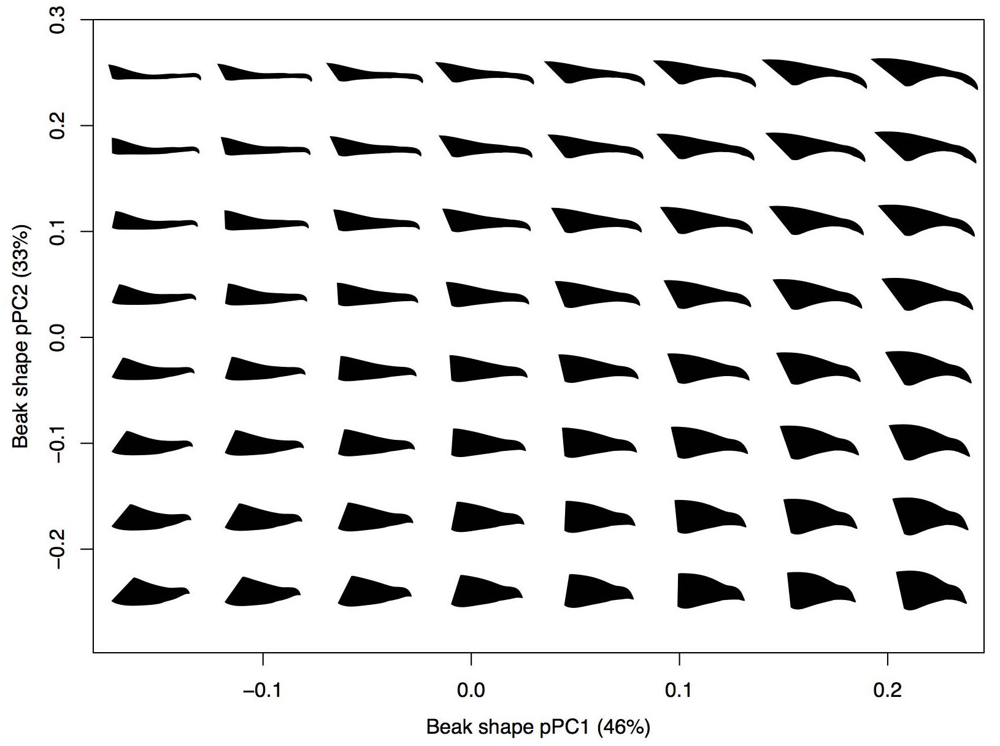

home >
current projects > waterfowl feeding
Reconstructing the evolution of feeding in waterfowl
The evolution of herbivory in waterfowl (from
Olsen 2015)
Bird beaks are frequently invoked as a classic example of adaptive evolution to feeding ecology.
However, most studies of feeding evolution in birds have focused
on Passerines, which represent only half of all avian diversity.
And, with the exception of Darwin's finches, there are few bird groups in which
we have an integrated understanding of how the feeding system has evolved.
Waterfowl (Anseriformes) are a diverse and globally distributed order of birds
that includes ducks, geese, swans, and mergansers.
Owing to their economic and agricultural importance,
more is known about the diets of waterfowl than perhaps any other bird order.
Waterfowl also exhibit a diversity of beak shapes and feeding behaviors.
For these reasons waterfowl are an ideal model system for understanding the
evolution of an avian feeding system and for testing classic hypotheses on the link between
beak shape and feeding ecology.

A waterfowl beak morphospace
As a major part of my PhD thesis I integrated diet data compiled from the literature,
and beak shape data collected from natural history specimens to
examine patterns of ecological and morphological evolution in waterfowl.
Compiling dietary data from over 200 quantitative published studies, I
showed that waterfowl have undergone at least five independent transitions
to a more herbivorous diet and that these increases in a less digestible diet
are uncorrelated with changes in body mass
(
Olsen 2015).
I combined this continuous dietary dataset with 3D geometric morphometric data
to quantify how much of dietary diversity is explained by beak shape
and to identify the axes of shape and dietary variation mostly strongly
associated with one another (Olsen,
in review).
I will be combining the beak shape data with morphometric data from the rest
of the skull to test the strength of morphological integration between the beak
and the rest of the skull, in the context of ecological adaptation of the beak.
Publications resulting from this project
- Olsen AM (2017). Feeding ecology is the primary driver of beak shape diversification in waterfowl. Functional Ecology. 31(10):1985-1995. DOI: 10.1111/1365-2435.12890. Get via Wiley, via ResearchGate.
- Olsen AM (2015). Exceptional avian herbivores: multiple transitions toward herbivory in the bird order Anseriformes and its correlation with body mass. Ecology and Evolution. 5(21):5016-5032. DOI: 10.1002/ece3.1787. Get via Wiley (open access).
Software related to this project